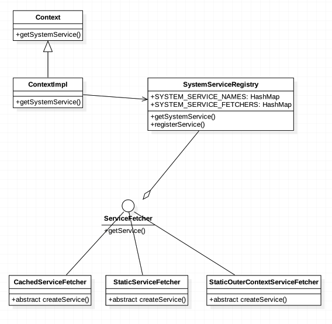
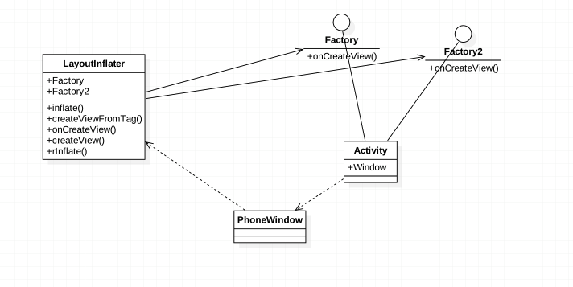

导言
加载布局的时候经常会用到
或者
关键就是LayoutInflater，它是通过
因此可以看出它其实属于系统的一种服务。由此我们来分析当使用系统服务时都做了什么？
分析
由源码我能知道获取系统服务总是通过
因此在ContextImpl找到
SystemServiceRegistry
SYSTEM_SERVICE_FETCHERS是个Map容器，保存着ServiceFetcher
从SystemServiceRegistry可以看出，我们平时所需要的系统服务都会在一开始的注册
ServiceFetcher
这里每次获取服务的时候都会进行缓存检查确保只会存在一个相同的服务
下面是uml图

上述代码会注册LayoutInflayer服务，可以看出实际的实现在PhoneLayoutInflayer，其继承自LayoutInflayer。
主要加载视图的主要步骤:
解析xml根元素，根元素如果是merge直接调用rInflate,root作为根节点。否则调用createViewFromTag加载视图,然后挂到根节点下
通过Factory或者Factory2加载视图(主要用于Fragment)，之后如果是内置View调用onCreateView，然后调用createView，自定义View直接调用createView。
createView首先从sConstructorMap中取出缓存的View构造器，如果不存在直接通过反射创建实例，还可以通过Filter来控制加载的View。
rInflate()
解析顺序是
<requestFocus/>-><tag>-><include>-><merge>-><View>
LayoutInflater uml
